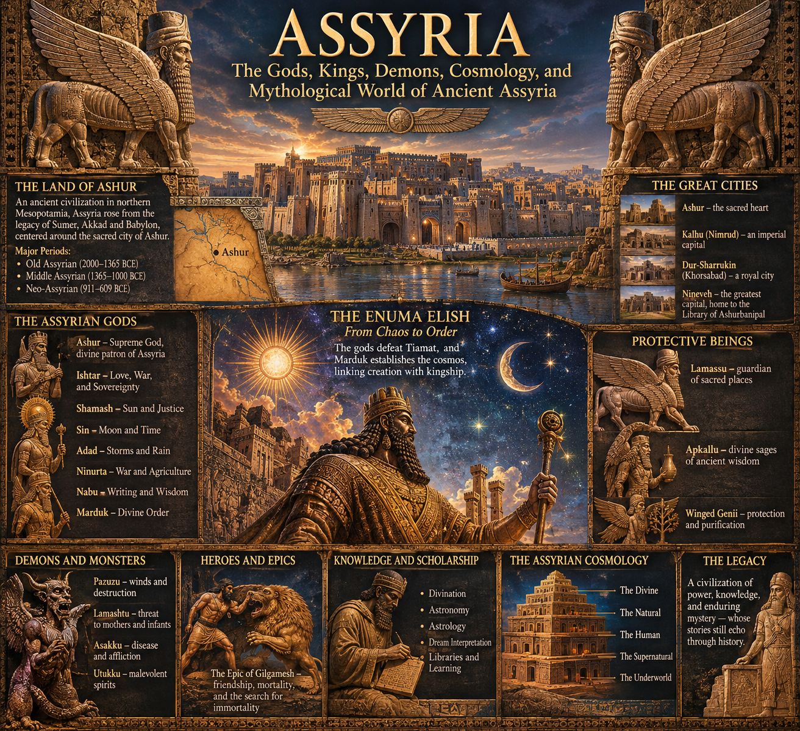

Assyria

ASSYRIA: THE COMPLETE CIVILIZATION
An exhaustive historical and anthropological documentary
INTRODUCTION — WHAT WAS ASSYRIA?
Assyria was not simply an empire, a military organization, or a collection of ancient cities. It was a civilization whose institutions developed over many centuries, whose inhabitants lived through several distinct political systems, and whose cultural identity survived the disappearance of its imperial government.
To understand Assyria properly, one must begin by separating three related but different things:
- Assyria as a geographical and cultural region of northern Mesopotamia.
- Assyria as a kingdom, with its own rulers, institutions, religious centers, and political traditions.
- Assyria as an empire, an expanding territorial state that incorporated numerous foreign populations and governed an enormous area.
These three meanings overlap, but they are not interchangeable.
The Assyrian Empire was the most politically spectacular expression of a much older society. Long before its armies reached the Mediterranean, its merchants were conducting business across Anatolia, its agricultural communities were maintaining settlements along the Tigris, and its scribes were participating in a literary and administrative tradition inherited from earlier Mesopotamian civilizations.
Its population was never culturally uniform. The Assyrian heartland, the Babylonian south, the Anatolian kingdoms, the Levantine coast, the Zagros mountains, and the territories of western Iran possessed different languages, economies, customs, and religious traditions. Imperial expansion brought these societies into increasingly close contact.
Consequently, the history of Assyria is also a history of cultural exchange, population movement, political competition, technological adaptation, environmental management, and the changing organization of human communities.
Our objective is to reconstruct that society as completely as the surviving evidence allows.
A qualification is necessary at the outset: no ancient civilization leaves behind a complete record of its population. Assyrian evidence is unusually extensive, but it is unevenly distributed. Royal inscriptions tell us what kings wanted remembered. Administrative tablets reveal transactions and obligations. Private letters expose personal concerns. Archaeological remains disclose buildings, food production, craftsmanship, and patterns of habitation. None of these sources independently provides a complete picture.
The following account therefore distinguishes established evidence from reasonable reconstruction and acknowledges where the historical record becomes uncertain.
BOOK I — THE ENVIRONMENT THAT MADE ASSYRIA POSSIBLE
- The geographical setting
Assyria developed in northern Mesopotamia, principally in what is now northern Iraq, with important historical connections extending into southeastern Turkey, northeastern Syria, and western Iran.
Its original heartland lay along and around the Tigris River.
The Tigris was not merely a convenient source of water. It was a geographical organizing principle. It provided access to fertile agricultural land, supported settlements, connected communities, and formed part of the wider transportation network that linked northern and southern Mesopotamia.
Northern Mesopotamia differed significantly from southern Mesopotamia.
Southern Mesopotamia, particularly the Babylonian alluvial plain, depended heavily upon extensive irrigation because rainfall was insufficient for reliable cereal agriculture across much of the region.
Northern Mesopotamia possessed a greater variety of ecological conditions. Some areas received sufficient seasonal rainfall to support rain-fed agriculture, while others depended upon rivers, streams, wells, and irrigation.
This distinction influenced settlement patterns, agricultural practices, pastoralism, and the organization of political authority.
The Assyrian heartland contained several environmental zones:
- River valleys and floodplains.
- Rolling agricultural plains.
- Foothills and elevated terrain.
- Semi-arid grasslands.
- Mountainous regions toward the east and north.
- Steppe environments supporting mobile pastoral communities.
Each environment supported different forms of subsistence.
The agricultural household situated near a river did not necessarily live in the same economic circumstances as a pastoral family moving seasonally across grasslands.
Assyria was therefore not one uniform ecological environment but a connected collection of landscapes.
- Climate and seasonal conditions
Northern Mesopotamia experiences pronounced seasonal variation.
Winters are generally cooler and wetter, while summers are hot and dry.
Agriculture depended upon the relationship between rainfall, soil moisture, seasonal temperatures, and access to water.
The timing of precipitation mattered enormously.
A successful harvest required more than fertile soil. Rain needed to arrive at useful stages of crop development, and excessive dryness during critical growing periods could reduce yields.
The ancient population had to manage uncertainty through agricultural planning, storage, diversification, and trade.
Cereal cultivation was particularly important.
Barley was an important crop throughout Mesopotamia because of its adaptability to challenging conditions. Wheat was also cultivated in suitable environments.
Other agricultural products included legumes, vegetables, fruits, and cultivated plants appropriate to local conditions.
Livestock provided additional economic security.
Sheep and goats were particularly important because they could exploit grazing environments that were unsuitable for intensive cultivation.
Cattle, pigs, donkeys, and other domestic animals contributed to agricultural production, transportation, food supply, and household wealth.
- Water management
Water management was a fundamental concern.
Communities constructed and maintained canals, drainage channels, wells, embankments, and other hydraulic infrastructure.
The exact requirements varied by location.
In rain-fed areas, agricultural success depended primarily upon precipitation and soil conditions. In areas with inadequate rainfall, artificial water distribution became more important.
Large irrigation projects required coordinated labor.
Canals needed to be excavated, maintained, cleared of sediment, and repaired after damage.
Water distribution could generate disputes between neighboring communities, landholders, and political authorities.
The ability to organize such work was one of the practical foundations of state formation.
Under later Assyrian kings, large hydraulic projects became demonstrations of royal administrative capacity.
Sennacherib's waterworks around Nineveh are especially significant. His construction program included canals and aqueducts that transported water across considerable distances to supply the capital and its agricultural surroundings.
The infrastructure was simultaneously practical, economic, political, and monumental.
- The landscape as an economic system
Assyrian society depended upon an interconnected relationship between agriculture, animal husbandry, forestry, mining, manufacturing, and trade.
The Tigris and its tributaries provided transportation and water.
The northern plains supported agriculture.
The eastern mountains provided access to timber, stone, metals, and routes into the Iranian plateau.
Anatolia offered important sources of metals and commercial opportunities.
The Levant connected Mesopotamia to Mediterranean trade networks.
Southern Mesopotamia supplied access to older urban markets, specialized goods, and established religious and intellectual traditions.
The Assyrian geographical position was consequently valuable because it connected multiple economic worlds.
This did not make Assyria automatically powerful. Geography supplied opportunities, but political institutions, military organization, diplomacy, labor, and economic coordination determined how effectively those opportunities could be used.
BOOK II — THE EARLIEST FOUNDATIONS
- Before Assyria became a kingdom
The territory that would become Assyria was inhabited long before the emergence of a clearly identifiable Assyrian state.
Northern Mesopotamia contained settled agricultural communities, developing towns, and regional exchange networks during the prehistoric and early historic periods.
The broader region participated in the cultural transformations associated with the late Neolithic, Chalcolithic, and Bronze Age.
These periods witnessed changes in settlement density, agricultural production, craft specialization, metallurgy, household organization, and the growth of administrative practices.
It is important not to imagine that Assyrian civilization suddenly appeared fully formed.
Its development was gradual.
The region inherited cultural and technological traditions from communities that had existed for centuries.
Archaeological sites such as Tell Brak, Nineveh, and other northern Mesopotamian settlements demonstrate the antiquity and complexity of urban life in this region.
However, the inhabitants of these earlier settlements cannot automatically be identified as Assyrians in the later historical or political sense.
Ethnic and political identities develop over time. Archaeological continuity alone does not establish an unbroken ethnic identity.
- The rise of the city of Ashur
The city of Ashur became the central political and religious foundation of the Assyrian state.
Located on the western bank of the Tigris, it occupied a position that connected river transportation with routes leading toward the northern plains and eastern highlands.
Its development extended back into the third millennium BCE.
During this period, northern Mesopotamia was influenced by several major political and cultural formations, including Akkadian and later Ur III power.
The Third Dynasty of Ur, which dominated much of southern Mesopotamia around the end of the third millennium BCE, maintained influence over regions farther north.
When centralized Ur III authority weakened and disappeared, Ashur developed greater political independence.
This transition provides the conventional starting point for the Old Assyrian period, approximately the early twentieth century BCE.
The city was not initially a vast territorial empire.
It was a comparatively small but economically important city-state.
Its political influence rested partly upon commercial connections, religious authority, and its capacity to coordinate a network of merchants.
- The political organization of early Ashur
The government of early Ashur possessed institutions that differed from the later absolute imperial monarchy.
The city was governed by a king, but the city's collective political institutions also played important roles.
The assembly, conventionally referred to as the City or city assembly, was involved in major decisions.
A significant official institution was the limmu system.
The limmu was an annually designated official whose name was used to identify the year.
This provided a chronological framework for administrative records and commercial transactions.
The system is particularly valuable to modern historians because it helps establish the chronology of surviving tablets.
The early Assyrian government also relied upon officials, commercial representatives, religious authorities, and influential households.
Political power was therefore distributed through a combination of royal authority and established civic institutions.
The king was not simply an owner of every economic activity taking place in the city.
Assyrian merchants could operate with considerable independence.
This distinction becomes especially important when examining the commercial expansion of the Old Assyrian period.
BOOK III — THE OLD ASSYRIAN WORLD
- The Old Assyrian period, approximately 2000–1750 BCE
The Old Assyrian period is among the most revealing periods of Assyrian history because its surviving records provide unusually intimate evidence of everyday life.
The principal source is the collection of cuneiform tablets discovered at Kültepe, ancient Kanesh, in central Anatolia.
Thousands of documents preserve commercial correspondence, contracts, loan agreements, legal disputes, family arrangements, transportation records, and private communications.
These records allow us to reconstruct an actual operating society rather than relying exclusively upon royal monuments.
The Old Assyrian world was fundamentally commercial.
Its merchants established a network of trading settlements across Anatolia, with Kanesh serving as a particularly important center.
The network connected the city of Ashur with distant Anatolian communities through organized caravan transportation.
- The international trading network
Assyrian merchants transported goods across considerable distances.
One of the principal commodities was tin.
Tin was essential for the production of bronze when combined with copper.
Bronze technology had considerable military, agricultural, and economic importance during the Bronze Age.
Assyrian merchants also transported textiles, particularly woolen products.
These goods were exchanged for silver and gold, while copper was traded within Anatolia.
The resulting commercial system involved a chain of merchants, transporters, investors, family members, local rulers, and trading intermediaries.
Caravans traveled with donkeys carrying merchandise across difficult terrain.
A journey between Ashur and central Anatolia could require several months, depending upon circumstances.
Travel involved considerable uncertainty.
Merchants faced theft, political instability, weather, damaged goods, transport losses, debt disputes, and fluctuating prices.
Commercial letters reveal people discussing these problems in practical terms.
They were concerned with delayed shipments, unpaid loans, the quality of merchandise, family expenses, and the performance of business partners.
The ancient economy was not primitive simply because it lacked modern machinery.
It possessed sophisticated financial relationships, credit arrangements, recordkeeping, and contractual obligations.
- The organization of Assyrian merchants
The merchant network was not merely a collection of unrelated traders.
It possessed organized institutions.
The commercial settlement at Kanesh included an Assyrian merchant community known as a kārum.
This institution operated in relation to the city of Ashur but also maintained important local responsibilities.
It participated in the administration of commercial affairs, collective decisions, legal disputes, and relations with local authorities.
Merchants maintained archives containing letters, receipts, contracts, and accounts.
These documents were often stored in rooms within private houses.
The survival of thousands of tablets is largely a consequence of the destruction and abandonment of the ancient settlement, which preserved the clay records.
A merchant's commercial life could involve several family members working together across different geographical locations.
One individual might supervise transportation, another oversee manufacturing, and another manage household property or finances.
The household was therefore also an economic organization.
- The family economy
The family was the central unit of Old Assyrian social life.
Merchant households could maintain operations across distant cities.
Husbands frequently traveled or established residences in Anatolia, while wives remained in Ashur and managed substantial aspects of household and commercial activity.
Women could supervise textile production, lend money, purchase property, manage accounts, and correspond with business partners.
This is an especially important feature of the Old Assyrian evidence.
Women were not simply invisible dependents.
They participated in legally and economically significant activities.
Their authority varied according to household circumstances, wealth, marriage arrangements, inheritance, and individual position.
Some women were able to own property independently.
Contracts document marriage, divorce, loans, purchases, and inheritance.
There is also evidence of polygamous arrangements in certain commercial households.
Marriage was consequently both a personal and an economic institution.
It connected households, established inheritance expectations, and organized responsibility for property and debt.
- Children, inheritance, and household continuity
Children were important to the continuation of family property and commercial networks.
A merchant's sons might inherit commercial responsibilities and work alongside older relatives.
Daughters could receive property, participate in marriage arrangements, and contribute to the economic security of their households.
Family members were not always located in the same city.
The separation of husbands, wives, children, and commercial partners created complicated obligations.
Letters reveal concerns about household maintenance, expenses, illness, family disagreements, and the responsibilities of distant relatives.
This provides an unusually human perspective on Bronze Age life.
The ancient merchant was not merely a historical economic statistic.
He was a parent, spouse, debtor, investor, traveler, and participant in a network of relationships that could extend across hundreds of kilometers.
- Women in Old Assyrian society
Women occupied several distinct positions within the Old Assyrian economy.
Some managed households.
Others produced textiles.
Some invested money, extended loans, purchased property, or represented absent husbands.
Women could possess separate assets and appear in legal documents as independent parties.
Their rights were nevertheless shaped by patriarchal social institutions.
The existence of female property ownership should not be mistaken for equality in the modern sense.
Social position differed between wealthy merchant households, ordinary families, dependent workers, and enslaved women.
The surviving archives are also disproportionately associated with commercial households, meaning that the most visible women are often those connected to literate and economically successful families.
The evidence therefore reveals real female economic participation while leaving many other women's experiences less visible.
- Labor and slavery
Slavery existed in Old Assyrian society.
Enslaved individuals could be bought, sold, inherited, and employed in domestic or economic activities.
The surviving documents also demonstrate the existence of debt obligations and other forms of dependency.
It is necessary to distinguish slavery from wage labor, debt, tenancy, and other dependent relationships.
These categories were not interchangeable.
The precise circumstances of an individual depended upon legal status, household ownership, debt arrangements, and social position.
The presence of slavery also demonstrates that the sophistication of Assyrian commercial institutions did not imply universal economic freedom.
- Religion in the Old Assyrian period
The god Ashur was central to the religious identity of the city.
Religious life included temples, offerings, ritual activities, priestly offices, and the observance of sacred occasions.
The Assyrians participated in the wider Mesopotamian religious tradition.
Their gods and religious concepts shared historical connections with Sumerian and Akkadian traditions.
Ishtar, Shamash, Sin, Adad, and other deities occupied important positions within the wider pantheon.
Religious dedication could also intersect with family arrangements.
Some daughters were consecrated to a deity, an arrangement that involved religious and social obligations.
Religion was not separated from commerce or government.
Temples possessed economic resources, received offerings, and participated in the broader organization of urban life.
- The end of the Old Assyrian commercial system
The Old Assyrian trading network gradually declined during the eighteenth century BCE.
Political instability in Anatolia and northern Mesopotamia affected commercial activity.
The decline of the network was not a single instantaneous event.
Trading conditions changed, settlements lost importance, and the documentary record became less abundant.
The city of Ashur continued to exist, but the extraordinary commercial archives associated with Kanesh became less representative of later Assyrian life.
The society that emerged afterward would be organized increasingly around territorial monarchy, royal estates, military authority, and administrative government.
BOOK IV — THE TRANSFORMATION INTO A TERRITORIAL KINGDOM
- Shamshi-Adad and the Upper Mesopotamian kingdom
During the early second millennium BCE, Shamshi-Adad I established a powerful territorial kingdom in northern Mesopotamia.
He was an Amorite ruler whose political career transformed the region.
His kingdom included Ashur and extended into neighboring territories.
He established a political structure in which his sons occupied important positions.
One of his sons, Ishme-Dagan, governed from Ekallatum.
Another, Yasmah-Addu, governed Mari.
This arrangement reflected the importance of family relationships in the organization of ancient states.
The king's household was effectively a political institution.
However, this kingdom should not be confused with the later Assyrian Empire.
It was a regional territorial state whose power depended upon military success, local alliances, and the personal authority of its ruler.
Following Shamshi-Adad's death, the kingdom fragmented.
Ashur eventually returned to a more independent political trajectory.
- Assyria between major powers
For several centuries, northern Mesopotamia experienced competition among powerful kingdoms.
Assyria interacted with Babylonian rulers, Hurrian political formations, the Mitanni kingdom, and other regional powers.
The Mitanni state became particularly influential during the second millennium BCE.
Assyria's political independence was restricted during periods of Mitanni dominance.
The region nevertheless retained its cultural identity and institutional traditions.
The international political environment was highly interconnected.
Diplomatic marriages, treaties, military alliances, tribute, and commercial relationships linked the major kingdoms.
Assyria was part of this international system, not an isolated society.
- The Middle Assyrian period
The Middle Assyrian period is conventionally dated from approximately 1365 to 1000 BCE.
During this period, Assyria re-emerged as a major territorial power.
The expansion of Assyrian influence was associated with rulers including Ashur-uballit I, Adad-nirari I, Shalmaneser I, and Tukulti-Ninurta I.
Ashur-uballit I is especially important because he established Assyria as a recognized participant in the international diplomacy of the Late Bronze Age.
His correspondence with the Egyptian royal court demonstrates the growing political standing of Assyria.
- The king and the palace
The Middle Assyrian political system was more centralized than the earlier Old Assyrian city-state.
The palace became a major institution of government and economic organization.
It should be understood as more than a royal residence.
The palace was an administrative center, a major employer, a recipient of agricultural and commercial resources, and an organizer of state expenditure.
It functioned in many respects as an enormous royal household.
The king stood at the head of this system.
Officials, governors, military commanders, scribes, and other administrators operated under royal authority.
The palace controlled or coordinated substantial resources, including agricultural estates, livestock, labor, storage facilities, and military supplies.
The state's economic organization increasingly revolved around the ability to mobilize resources across a territorial kingdom.
- Provincial government
As Assyrian territory expanded, administration required more than direct supervision from the capital.
Governors were appointed to manage territories and oversee local obligations.
These officials were responsible for maintaining political order, collecting resources, organizing labor, and fulfilling military requirements.
Local communities retained certain institutions and customs, but their relationship with the Assyrian monarchy increasingly involved formal obligations.
The development of provincial government provided an institutional foundation for the later empire.
- Middle Assyrian society and legal regulation
The Middle Assyrian legal tradition is particularly notable for the surviving Middle Assyrian Laws.
These legal collections address marriage, property, inheritance, assault, sexual conduct, domestic relationships, and other matters.
They are valuable evidence for social organization, but they must be interpreted carefully.
A legal text describes prescribed rules and punishments. It does not automatically describe what happened in every household or how consistently every provision was enforced.
The laws reveal a society with pronounced social hierarchies.
Status, gender, household authority, and legal classification influenced the treatment of individuals.
The treatment of women in these laws is particularly restrictive in several areas.
However, one should not simply transfer the evidence of Middle Assyrian legal prescriptions to every period of Assyrian history.
The Old Assyrian commercial archives demonstrate different forms of female economic participation.
The distinction between legal ideology and everyday practice is essential.
- Agriculture, labor, and landholding
Agriculture remained the foundation of material survival.
The palace required agricultural production to support its officials, soldiers, dependents, construction projects, and ceremonial activities.
Land could be associated with royal estates, private households, temples, and other institutional arrangements.
Labor was organized through several mechanisms.
Some individuals worked as independent agricultural producers.
Others were tenants or dependents.
Some worked for the palace or temples.
Enslaved labor also existed.
The state required labor for construction, agricultural work, transportation, and military logistics.
The exact relationship between a worker and an institution depended upon legal status and local arrangements.
- Military organization in the Middle Assyrian kingdom
Assyria's military capabilities expanded as its territorial ambitions increased.
Armies relied upon infantry, chariotry, cavalry in developing forms, archery, and specialized military personnel.
The use of horses was particularly important in the military systems of the ancient Near East.
Chariots required skilled drivers, trained horses, equipment, and organized logistical support.
Military operations also depended upon food, water, transportation, weapon production, and communication.
A successful campaign was therefore not merely an act of combat.
It was an administrative and logistical operation.
- The Late Bronze Age disruption
Around the end of the thirteenth and beginning of the twelfth centuries BCE, the eastern Mediterranean and Near East experienced major political and economic disruptions.
Several established kingdoms weakened or disappeared.
Long-distance trade networks changed.
Urban centers were abandoned or destroyed in some regions.
Population movements and political instability affected the wider Near East.
Assyria survived, although its territorial power fluctuated.
This period illustrates the vulnerability of interconnected political systems.
The collapse of one major state could disrupt trade, diplomacy, military alliances, and access to essential resources elsewhere.
Assyria's ability to survive these transformations would become important to its later imperial development.
BOOK V — THE RISE OF THE NEO-ASSYRIAN EMPIRE
- The Neo-Assyrian period
The Neo-Assyrian period is conventionally dated from approximately 911 to 609 BCE.
It represents the most internationally influential phase of Assyrian history.
However, the empire did not emerge fully formed.
The early Neo-Assyrian period involved rebuilding political authority after centuries of fluctuating power.
Ashur-dan II and his successors expanded Assyrian control over surrounding territories.
Ashurnasirpal II, who ruled from 883 to 859 BCE, was especially important.
He expanded the kingdom and transformed Kalhu into a monumental royal capital.
- The new imperial capital
Kalhu, known today as Nimrud, became a major center of government.
Its royal architecture expressed the growing power of the monarchy.
The palace included reception halls, ceremonial spaces, administrative rooms, private quarters, and monumental entrances.
Its walls were decorated with carved stone reliefs.
These reliefs depicted military campaigns, royal hunts, religious ceremonies, supernatural guardians, and scenes of royal activity.
The images were originally painted.
The architecture was therefore not the monochromatic stone environment often presented in modern museum displays.
It incorporated plaster, pigments, glazed brick, sculpture, and elaborate surface decoration.
The palace communicated a carefully constructed image of royal power.
- The Assyrian military system
The Neo-Assyrian military was among the most sophisticated military organizations of the ancient Near East.
Its effectiveness depended upon coordination between the royal government, military commanders, provincial authorities, transport systems, and specialist personnel.
The army included:
- Infantry.
- Archers.
- Spearmen.
- Slingers.
- Cavalry.
- Chariot units.
- Engineers.
- Siege specialists.
- Logistics personnel.
- Auxiliary contingents.
Not every soldier possessed the same equipment or status.
The composition of an army could vary depending upon the campaign and the geographical environment.
Provincial forces and contingents from subject territories contributed to military manpower.
The army was supported by organized supply systems.
Weapons, food, animals, water, tools, and transport equipment needed to reach the battlefield.
- Siege engineering
Assyrian warfare is especially famous for its siege technology.
Fortified cities presented serious military obstacles.
An attacker could attempt to:
- Block access to supplies.
- Surround the settlement.
- Construct siege ramps.
- Attack walls with battering rams.
- Undermine defensive structures.
- Use archers to suppress defenders.
- Construct protective siege equipment.
- Breach gates and walls.
- Exploit internal political divisions.
Assyrian palace reliefs preserve detailed representations of siege warfare.
These scenes depict soldiers operating siege engines, attacking fortified walls, transporting equipment, and capturing prisoners.
The images are valuable sources for military technology, although they are also political representations designed to emphasize the king's success.
- The psychology and administration of imperial warfare
Assyrian royal inscriptions frequently describe the destruction of rebellious cities, the capture of enemies, and the punishment of defeated rulers.
Violence was an explicit component of imperial political communication.
The empire sought to make resistance appear dangerous and submission advantageous.
However, imperial policy was not based exclusively on destruction.
Conquered regions could be incorporated into the empire through treaties, tribute, provincial administration, the appointment of local rulers, and the resettlement of populations.
The preferred approach could vary according to strategic importance and political circumstances.
The empire required productive territory.
Destroying every settlement would undermine its own economic foundation.
The Assyrian state therefore combined coercion with administrative incorporation.
- Tiglath-pileser III and the imperial transformation
Tiglath-pileser III came to power in 745 BCE.
His reign marked a major transformation in Assyrian imperial organization.
He strengthened central authority, expanded territorial control, and reorganized important aspects of provincial administration.
Conquered territories could be converted into provinces governed by appointed officials.
Other regions remained under subordinate rulers who owed tribute and political obedience.
The distinction between provinces and vassal territories allowed the empire to govern an enormous area without immediately imposing identical administrative arrangements everywhere.
Military campaigns, taxation, provincial government, and population transfers became increasingly interconnected.
The empire developed a more systematic mechanism for mobilizing resources.
- The imperial economy
The Neo-Assyrian economy depended upon agriculture, tribute, taxation, labor, trade, livestock, manufacturing, and state-directed redistribution.
Agricultural production remained fundamental.
The empire collected resources from provincial territories and subordinate kingdoms.
These resources could support the palace, army, temples, construction projects, and administrative institutions.
Tribute might include metals, livestock, horses, textiles, timber, luxury goods, and other commodities.
The empire also benefited from commercial exchange.
Its political expansion connected previously separate economic regions through military roads, administrative networks, and controlled trade routes.
However, the empire did not operate as one perfectly integrated modern economy.
Regional production systems remained diverse.
Local communities retained different economic arrangements, and the flow of resources was shaped by geography and political circumstances.
- Population deportation and resettlement
One of the most consequential features of Neo-Assyrian imperial policy was the organized relocation of populations.
The Assyrians deported people from conquered territories and resettled them elsewhere in the empire.
This practice had several purposes.
It could punish rebellion.
It could weaken local political structures.
It could transfer skilled labor to regions where the state needed it.
It could populate devastated agricultural territories.
It could reorganize communities and reduce the ability of defeated populations to mobilize against imperial authority.
Deportation was not a minor or incidental feature of Assyrian imperialism.
It was a major instrument of state policy.
Individuals and families could be removed from their homes and transported across considerable distances.
Their movement could involve loss of property, separation from established communities, changes in language, and adaptation to unfamiliar environments.
The empire sometimes assigned relocated populations to agricultural, construction, or other economic activities.
This policy contributed to the cultural and linguistic diversity of the Assyrian heartland.
It also helped create a more interconnected imperial society.
The consequences were profound for both the deported populations and the communities into which they were placed.
- The administration of the empire
The empire required a sophisticated administrative structure.
The king occupied the highest political position.
Beneath him operated senior officials, governors, military commanders, provincial administrators, scribes, diplomats, and other specialists.
The administration used written correspondence and documentary records to coordinate activities over great distances.
Royal authority was represented through official seals and authenticated communications.
The royal seal was especially important.
Officials entrusted with its authority could act in the king's name.
The possession of such authority transformed a document or command into an instrument of state power.
The empire also maintained a communication network often called the King's Road.
Relay systems and mounted or pack animals helped transport official communications.
The speed of information mattered.
A distant governor needed to communicate military threats, administrative problems, harvest conditions, and political developments.
A central government that could not receive information or transmit instructions effectively would struggle to control its territory.
The Assyrian administrative system was therefore an information network as much as a political hierarchy.
- Sargon II and the construction of Dur-Sharrukin
Sargon II ruled from 721 to 705 BCE.
He constructed a new royal capital, Dur-Sharrukin, at modern Khorsabad.
The city was designed as a monumental expression of royal authority.
Its palace complex incorporated extensive ceremonial architecture and protective sculpture.
The city's planning demonstrates the capacity of the Assyrian state to mobilize labor, materials, and technical expertise on an enormous scale.
Its construction was not simply an architectural undertaking.
It required surveying, quarrying, transportation, masonry, carpentry, administration, provisioning, and the coordination of large workforces.
The city also illustrates the political ambitions of a ruler who wished to associate his reign with a new monumental foundation.
- Sennacherib and the transformation of Nineveh
Sennacherib ruled from 705 to 681 BCE.
He made Nineveh the principal imperial capital and transformed it into an enormous urban center.
The city possessed extensive defensive walls, monumental gates, palaces, canals, gardens, and administrative infrastructure.
The royal palace was an architectural statement of imperial power.
Its reliefs represented military campaigns, royal hunts, religious imagery, and the movement of resources through the empire.
Sennacherib also developed extensive waterworks.
The hydraulic system supporting Nineveh required engineering on a large scale.
Canals and aqueducts transported water across the landscape.
The famous aqueduct at Jerwan is associated with this construction program.
These projects helped support urban life, agricultural production, and royal gardens.
They also demonstrated the king's ability to organize the natural environment through state-directed labor.
- Babylon and the southern Mesopotamian problem
Assyria's relationship with Babylonia was one of the most complicated aspects of its political history.
Babylon possessed an ancient cultural prestige that Assyria could not simply erase.
Its religious institutions, temples, scholarly traditions, and political identity were deeply established.
Assyrian kings therefore faced a recurring problem: how could they control Babylonia without destroying the cultural and religious legitimacy upon which its political institutions depended?
Some rulers attempted cooperation and restoration.
Others used military force.
Sennacherib destroyed Babylon in 689 BCE after prolonged conflict.
The destruction was an extraordinary political and religious event.
His successors adopted different approaches.
Esarhaddon undertook the restoration of Babylon, recognizing the importance of its religious and political institutions.
This illustrates that imperial policy was not uniform.
The same empire could destroy a rebellious city in one generation and invest heavily in restoring it in another.
BOOK VI — THE SOCIETY INSIDE THE EMPIRE
- The population of Assyria
The Neo-Assyrian Empire contained an enormous diversity of peoples.
The population included Assyrians from the heartland and inhabitants of conquered or incorporated territories.
These included Aramaeans, Babylonians, Chaldeans, Israelites, Phoenicians, Egyptians, Elamites, Medes, Anatolian populations, and many others.
These names represent different political, linguistic, cultural, and geographical identities.
They should not be treated as interchangeable ethnic categories.
A person could possess a local identity, participate in an imperial administration, speak more than one language, and belong to a household with mixed cultural connections.
The imperial population was therefore not a single homogeneous people.
- Social hierarchy
Assyrian society was hierarchical.
At the highest level stood the king and royal household.
Below them were major officials, military commanders, powerful families, provincial governors, religious authorities, and wealthy landholders.
Other social groups included merchants, scribes, craftspeople, agricultural producers, soldiers, pastoralists, servants, and dependent laborers.
Enslaved people occupied a particularly vulnerable legal and social position.
The exact categories of status were more complicated than a simple division between rich and poor.
An individual's position depended upon occupation, legal status, household relationships, property, patronage, and connection to institutions.
A skilled scribe might possess influence beyond his immediate wealth.
A merchant might exercise considerable economic independence.
A provincial governor could command enormous resources while remaining dependent upon royal favor.
A farmer might possess land and livestock but be subject to taxation and labor obligations.
- The ordinary household
The household was the fundamental unit of everyday life.
It was a place of residence, production, storage, family organization, and economic responsibility.
Houses varied in size and complexity.
Wealthier households could possess multiple rooms arranged around courtyards.
Smaller dwellings had more limited space.
Buildings were generally constructed using mud brick, with materials and architectural techniques varying according to local resources and wealth.
Roofs were commonly supported by wooden beams.
Rooms could be used for sleeping, cooking, storage, work, and domestic activities.
Courtyards provided light, ventilation, and space for household tasks.
The arrangement of rooms reflected practical requirements and family organization.
Not every household possessed the same privacy or comfort.
The homes of elite officials were very different from the dwellings of agricultural laborers.
- Food and nutrition
The Assyrian diet depended upon agricultural production, animal husbandry, trade, and local availability.
Cereal products formed a major part of everyday food consumption.
Barley and wheat could be processed into flour and used to produce bread, porridge, and other preparations.
Beer was an important beverage in Mesopotamian society.
It was produced from grain and occupied both nutritional and social roles.
Dates were particularly important in the southern regions, while northern agricultural environments supported different combinations of fruits and crops.
Legumes, onions, garlic, herbs, and vegetables contributed to food preparation.
Meat was available through livestock production and hunting, but access varied according to wealth and social position.
Sheep and goats supplied meat, milk, wool, and other useful products.
Cattle were valuable for agricultural work and food production.
Fish could be obtained from rivers and other water sources.
Food preservation was essential.
Drying, salting, fermentation, and storage helped households manage seasonal variation.
Grain storage was particularly important because agricultural production was subject to uncertainty.
The palace and wealthy households possessed more extensive provisioning systems than ordinary families.
- Clothing and textiles
Textile production was a major economic activity.
Wool was especially important.
Sheep provided a renewable source of fiber, which could be spun into yarn and woven into cloth.
Linen and other textile materials were also available through trade and specialized production.
Clothing varied according to occupation, wealth, gender, and social status.
Royal clothing was designed to communicate authority.
The king's garments, jewelry, headdress, and ceremonial accessories formed part of an official visual language.
Officials and elite individuals could wear distinctive clothing associated with their rank.
Ordinary people used more practical garments suited to work and climate.
Textile production required several stages:
- Obtaining and preparing fibers.
- Cleaning and processing wool.
- Spinning thread.
- Preparing looms.
- Weaving fabric.
- Finishing and decorating cloth.
- Distributing or selling the finished products.
Women played important roles in textile production, particularly in household economies.
Large-scale textile operations could also involve institutional organization and dependent labor.
- Crafts and manufacturing
Assyrian society supported a broad range of skilled occupations.
These included:
- Potters.
- Metalworkers.
- Blacksmiths.
- Bronze workers.
- Carpenters.
- Stonecutters.
- Sculptors.
- Leatherworkers.
- Textile workers.
- Jewelers.
- Builders.
- Boat and cart makers.
- Seal cutters.
- Scribes.
Craft production could be organized through households, workshops, temples, palaces, or commercial enterprises.
Metallurgy was particularly important.
Copper, bronze, iron, silver, and gold were used in tools, weapons, ornaments, and ceremonial objects.
Iron became increasingly important during the first millennium BCE.
Its production required specialized knowledge and access to appropriate ores and fuel.
The existence of sophisticated metallurgy depended upon supply networks extending beyond the immediate Assyrian heartland.
- Transportation
Transportation was a major logistical concern.
Donkeys were particularly important in earlier commercial networks.
Horses were essential to military and elite transportation systems.
Oxen could be used for agricultural work and pulling carts.
Wheeled vehicles served transportation and military purposes.
Rivers provided additional routes, although the navigability of individual stretches varied.
The road network connected major cities, provincial centers, agricultural regions, and frontier territories.
Travelers faced uneven roads, seasonal conditions, political boundaries, and the need for provisions.
The empire's communication network was particularly important because the movement of information was often as strategically valuable as the movement of goods.
- Women in the imperial period
The experience of women varied considerably across Assyrian society.
Royal women occupied important positions within the palace household.
Queens and royal mothers could possess wealth, estates, personnel, and political influence.
Some royal women participated in diplomatic and religious activities.
The wives of officials and merchants managed households and could exercise economic responsibilities.
Women participated in textile production and other forms of labor.
However, Assyrian society remained patriarchal.
Marriage, inheritance, household authority, and legal status were strongly influenced by gender.
The Middle Assyrian Laws demonstrate particularly restrictive attitudes toward women's conduct and social position.
It would be misleading to suggest that women possessed equal rights with men.
It would be equally misleading to imagine that women were absent from economic and political life.
The documentary evidence demonstrates a complicated society in which female agency existed within unequal institutional arrangements.
- Childhood and education
Children were raised within households and learned many skills through participation in family life.
Agricultural households required children to acquire knowledge about crops, animals, food preparation, and household responsibilities.
Merchant families introduced children to commercial relationships and family obligations.
Elite households could provide access to formal scribal education.
Scribal training was demanding.
Students learned cuneiform signs, vocabulary, grammar, copying techniques, and established literary compositions.
Education was especially important for administrators and scholars.
The ability to write was a specialized skill, although literacy existed in several forms and was not limited to the highest royal officials.
The evidence for everyday childhood remains comparatively limited.
Most surviving documents were produced by adults and institutions.
Consequently, the emotional and social experiences of ordinary Assyrian children are less visible than those of elite and literate households.
- Marriage, inheritance, and family law
Marriage was a central social institution.
It established household relationships, organized property, and shaped inheritance.
Marriage contracts could specify financial arrangements and responsibilities.
Divorce was possible under certain circumstances.
Widowhood could create complicated inheritance and household obligations.
Property could pass through family relationships according to legal customs.
The details differed across periods and local communities.
The Old Assyrian archives are especially useful because they preserve actual contracts and private communications.
The Middle Assyrian legal tradition provides evidence of formal rules and penalties.
Together, these sources demonstrate that marriage and family life were embedded in an extensive legal and economic system.
- Slavery and dependent labor
Slavery was present throughout ancient Mesopotamia, including Assyria.
Enslaved individuals could be acquired through warfare, purchase, debt-related circumstances, or other processes.
They could perform domestic work, agricultural labor, and specialized tasks.
Their legal status was not equivalent to that of free household members.
Some enslaved individuals could participate in economic activity or be involved in transactions, but their circumstances depended upon their legal position and the authority of those who controlled them.
Other people occupied dependent statuses that did not necessarily amount to slavery.
These included tenants, laborers, palace dependents, and people obligated to perform services.
The empire's economic organization relied upon multiple forms of labor extraction.
Any account of Assyrian prosperity must therefore include the people whose labor was controlled or compelled by powerful institutions.
- Pastoralists and mobile communities
Not all Assyrians lived in cities.
Pastoral communities moved through agricultural margins and semi-arid environments.
Sheep and goats were particularly suited to seasonal grazing.
Mobile pastoralists supplied animal products and could participate in trade with settled communities.
Their relationship with the state varied.
Some were integrated into administrative systems.
Others maintained considerable mobility.
Pastoral populations were important because they occupied ecological zones that could not support intensive agriculture.
The empire depended upon the interaction of settled agriculture and mobile livestock production.
BOOK VII — RELIGION, COSMOLOGY, AND THE SUPERNATURAL
- The religious structure of Assyria
Assyrian religion was polytheistic.
Its gods represented a wide range of natural, social, political, and cosmic functions.
The divine world was not a collection of unrelated supernatural personalities.
It was an organized hierarchy of relationships, powers, responsibilities, and competing claims to authority.
The gods influenced fertility, warfare, disease, justice, celestial phenomena, political legitimacy, and the stability of the world.
Religion was integrated into government and ordinary life.
Kings performed religious ceremonies.
Temples possessed economic resources.
Scholars interpreted omens.
Families maintained household rituals.
Protective objects were used to guard people and buildings.
The distinction between religious, scientific, political, and magical activities was different from the categories used in modern society.
- Ashur
Ashur was the supreme national deity of Assyria.
His name was connected with the city and the political identity of the kingdom.
The king ruled under Ashur's authority.
Military campaigns were presented as activities carried out within the divine order.
Ashur represented the legitimacy and continuity of the Assyrian state.
His importance increased as the kingdom developed into an empire.
The deity became a central symbol of Assyrian political identity.
- Ishtar
Ishtar was associated with love, sexuality, fertility, warfare, and sovereignty.
Her identity was complex.
She could represent attraction, reproductive power, violence, and the destabilizing forces of desire.
Her cult was important in several Assyrian cities.
The goddess of Nineveh and the goddess of Arbela possessed important regional significance.
The Assyrian kings could associate Ishtar with military success and divine protection.
- Shamash
Shamash was the sun god and divine judge.
His light was associated with the revelation of truth.
He was invoked in matters involving justice, oaths, and legal judgment.
His importance reflected the broader Mesopotamian association between celestial order and social order.
- Sin
Sin was the moon god.
His cycles were important to calendrical observation and the measurement of time.
The moon's changing appearance became part of a wider astronomical and divinatory tradition.
Sin was particularly important in the religious life of northern Mesopotamia.
- Adad
Adad was associated with storms, thunder, rain, and atmospheric power.
His influence was both beneficial and destructive.
Rain supported agriculture, but storms could damage settlements and crops.
The deity therefore embodied the unpredictability of environmental conditions.
- Ninurta
Ninurta was associated with warfare, agriculture, and heroic combat.
He appeared in mythological narratives involving monsters and destructive forces.
His symbolism connected agricultural productivity with the defeat of disorder.
- Nabu
Nabu was the god of writing, wisdom, and scribal knowledge.
His cult became particularly important during the first millennium BCE.
He was associated with intellectual activity and the recording of destinies.
The importance of Nabu reflected the enormous value placed upon written knowledge in Assyrian administration.
- Marduk and Babylonian religious influence
Marduk was principally the supreme god of Babylon.
His position was important because Assyria and Babylonia shared a common Mesopotamian religious inheritance.
Assyrian rulers sometimes participated in Babylonian religious traditions and recognized the importance of Babylon's sacred institutions.
Their relationship with Marduk could become politically sensitive.
The destruction and restoration of Babylon under different Assyrian kings demonstrate that religious legitimacy was an important consideration in imperial policy.
- Creation and the organization of the cosmos
The Assyrians inherited a range of Mesopotamian creation traditions.
One of the most important was the Enuma Elish.
The composition describes primordial waters, the emergence of the gods, conflict between divine generations, and the victory of Marduk over Tiamat.
The universe is established through the organization of primordial conditions.
The story is Babylonian in its theological emphasis, although Assyrian scholars preserved and studied it.
It should not be described as an exclusively Assyrian creation narrative.
Other Mesopotamian texts presented different accounts of creation and divine organization.
The existence of multiple narratives is important.
Ancient Mesopotamian religion was not governed by one universally standardized scripture.
- Death and the underworld
Mesopotamian conceptions of death generally involved the continuation of existence in a diminished condition within the underworld.
The dead were not ordinarily imagined as entering a universal paradise equivalent to later religious conceptions.
The underworld was associated with darkness, dust, and reduced forms of existence.
Family relationships remained important after death.
Offerings and ritual attention could be directed toward deceased relatives.
Proper treatment of the dead was part of the broader organization of family and religious responsibilities.
- Divination
Divination was an organized scholarly discipline.
The Assyrian court employed experts who interpreted signs and advised the king.
These signs could appear in celestial movements, animal behavior, dreams, unusual natural events, and ritual examinations.
One particularly important practice was extispicy.
This involved examining the internal organs of sacrificed animals, especially the liver.
Specialists interpreted physical features according to established omen traditions.
Divination was not simply spontaneous superstition.
It involved technical knowledge, textual reference collections, established terminology, and trained practitioners.
- Astronomy and astrology
Mesopotamian scholars carefully observed the heavens.
They recorded lunar phases, planetary movements, eclipses, and unusual celestial events.
These observations contributed to mathematical and astronomical traditions that continued to develop over subsequent centuries.
Astronomy and astrology were not separated in the modern sense.
Celestial phenomena were interpreted as potential indicators of political and natural events.
Scholars compiled extensive omen series.
The heavens were understood as part of an ordered universe in which divine intentions could be communicated through observable patterns.
- Magic and ritual protection
Rituals were used to address illness, misfortune, demonic threats, political danger, and supernatural contamination.
Protective incantations and ritual objects formed part of everyday religious practice.
Some rituals involved water, figurines, symbolic actions, spoken formulas, and the use of protective materials.
The purpose was to counteract harmful forces or restore proper conditions.
The supernatural world included beings that were neither entirely benevolent nor entirely hostile.
The category of demon was therefore more complex than a simple equivalent of the later Christian devil.
- Protective supernatural beings
Assyrian palaces contained representations of protective figures.
The lamassu was a monumental hybrid creature combining human intelligence, animal strength, and supernatural wings.
It guarded palace entrances and other important spaces.
Apkallu were legendary sages associated with the transmission of civilization and divine knowledge.
Winged genii appeared in ritual imagery and were associated with purification and protection.
These figures transformed architecture into a symbolic defensive system.
The entrance to a palace was not merely a physical doorway.
It was also a boundary between protected royal space and the outside world.
- Demons and dangerous supernatural forces
Mesopotamian supernatural literature included numerous dangerous entities.
Pazuzu was associated with destructive winds.
Although terrifying, representations of Pazuzu could be used protectively against other supernatural threats.
Lamashtu was associated with dangers to pregnant women and infants.
Other supernatural categories included utukku and asakku.
These entities appeared in ritual and medical texts.
The distinction between illness, supernatural affliction, and ritual impurity differed from modern medical classification.
This does not mean ancient practitioners lacked practical medical knowledge.
Assyrian and Babylonian medical traditions included observations, remedies, diagnosis, and technical procedures alongside supernatural explanations.
BOOK VIII — LANGUAGE, WRITING, SCIENCE, AND INTELLECTUAL LIFE
- The Akkadian language
Akkadian was the principal language of Assyrian royal and administrative writing.
It belonged to the Semitic language family.
Assyrian Akkadian was a regional variety distinct from Babylonian Akkadian.
The two varieties shared a common linguistic foundation but possessed differences in vocabulary, pronunciation, and grammatical usage.
Akkadian had a long literary and administrative history.
It was used for letters, contracts, treaties, royal inscriptions, religious compositions, scholarly texts, and administrative records.
- Aramaic
Aramaic became increasingly important during the first millennium BCE.
It was widely used across the Near East.
Its alphabetic writing system was more accessible for many practical purposes than the complex cuneiform system.
The Assyrian Empire incorporated large Aramaic-speaking populations.
Aramaic consequently became an important language of imperial communication.
It did not immediately replace Akkadian.
Both languages were used in different contexts.
Akkadian remained central to scholarly and monumental traditions, while Aramaic offered practical advantages for communication across the empire.
This linguistic coexistence illustrates the administrative flexibility of Assyrian imperial society.
- Cuneiform
Cuneiform was a writing system created long before the Assyrian Empire.
It was used to record Sumerian and Akkadian, among other languages.
The signs were impressed into clay using a reed stylus.
The resulting wedge-shaped marks formed a complex writing system.
A tablet could record a short receipt, a personal letter, an extensive legal document, or a lengthy literary composition.
The physical form of the tablet varied according to its purpose.
Some tablets were enclosed within clay envelopes.
Cylinder seals could be rolled across the surface to authenticate documents.
Written records were essential to the administration of a large territorial state.
They preserved transactions, established obligations, transmitted commands, and maintained institutional memory.
- Scribal education
Scribes were trained specialists.
Their education involved memorizing signs, vocabulary, grammatical forms, and established textual compositions.
Students copied texts repeatedly.
The process could be demanding and time-consuming.
Scribal training also connected administrative work with intellectual scholarship.
The same broader tradition supplied individuals capable of writing contracts, interpreting omens, compiling astronomical observations, and preserving literary compositions.
Literacy was therefore a specialized form of technical expertise.
- Mathematics
Mesopotamian mathematics employed a sexagesimal numerical system based upon sixty.
This system was particularly useful for calculations involving astronomical observation, measurement, accounting, and geometry.
The mathematical tradition of Mesopotamia was extensive and predated the Assyrian Empire.
Assyrian administrators inherited and used established mathematical practices.
Mathematical techniques supported land measurement, taxation, construction, accounting, and commercial transactions.
The influence of the Mesopotamian sexagesimal tradition survives in modern timekeeping and angular measurement.
The division of an hour into sixty minutes and a minute into sixty seconds reflects this ancient mathematical inheritance.
- Medicine
Assyrian medical knowledge combined practical treatment with religious and supernatural interpretation.
Medical practitioners could identify symptoms, prepare remedies, and perform procedures.
Texts record the use of plants, minerals, animal products, and other materials.
Some documents describe treatments for injuries, digestive problems, fevers, skin conditions, and other ailments.
Medical practice was not one uniform profession.
Different specialists could approach illness through physical treatment, ritual intervention, or a combination of both.
The distinction between what modern medicine considers a natural disease and what ancient practitioners understood as supernatural affliction was not always clear.
- Libraries and the preservation of knowledge
The Library of Ashurbanipal at Nineveh is among the most important archaeological discoveries for the study of ancient Mesopotamia.
It contained thousands of tablets and fragments.
Its collection included literary compositions, religious texts, medical works, omen series, astronomical material, lexical lists, and administrative documents.
The collection was not simply a royal reading room.
It was a deliberate preservation and acquisition project associated with the king's scholarly interests and the intellectual institutions of the palace.
Ashurbanipal's library preserved texts that had originated centuries earlier.
Among the most important was the Epic of Gilgamesh.
The collection also included the Enuma Elish and other major Mesopotamian compositions.
The survival of these texts has made it possible to reconstruct substantial portions of ancient Mesopotamian intellectual history.
BOOK IX — ART, ARCHITECTURE, AND TECHNOLOGY
- Assyrian architecture
Assyrian architecture relied heavily upon mud brick.
Stone was used where appropriate, particularly for foundations, thresholds, sculptures, and decorative architectural elements.
Palaces were large complexes containing courtyards, halls, reception rooms, private quarters, storage spaces, and administrative areas.
The architecture was designed around both practical and ceremonial functions.
The throne room was especially important.
It provided a setting in which the king received officials, foreign envoys, and other visitors.
The physical arrangement of the palace helped organize access to royal authority.
- Monumental sculpture
Assyrian sculpture is especially famous for its palace reliefs.
These reliefs depicted military campaigns, hunting scenes, construction activities, religious ceremonies, and supernatural figures.
They were originally painted.
The scenes were not neutral historical illustrations.
They communicated an official interpretation of the king's achievements.
Military victories were represented as evidence of divine favor and royal competence.
The destruction of enemy cities and capture of prisoners reinforced the political authority of the monarchy.
The royal hunt represented the king's ability to control dangerous forces within the natural world.
- The royal lion hunt
The lion hunt was a particularly important royal motif.
Lions represented dangerous and powerful animals.
The king's confrontation with them became a symbolic demonstration of courage, physical ability, and sovereign control.
The famous reliefs from Ashurbanipal's palace at Nineveh depict lions in extraordinary anatomical detail.
The images show wounded animals, hunting equipment, horses, chariots, attendants, and royal activity.
They also reveal the technical abilities of Assyrian sculptors.
The lion hunt was both a physical activity and a carefully constructed political performance.
- The lamassu
The lamassu was one of the most distinctive architectural features of Assyrian palaces.
These monumental sculptures combined the body of a bull or lion with wings and a human head.
They guarded entrances and represented supernatural protection.
Their sculptural design was technically sophisticated.
Some examples were designed with five legs so that the figure appeared to stand still when viewed from the front and walk when viewed from the side.
This is an example of how Assyrian artists integrated architectural position, perspective, and symbolic meaning.
- Metalworking and weapon production
Assyrian military and civilian economies depended upon metalworking.
Bronze remained important, while iron became increasingly prominent during the first millennium BCE.
Metalworkers produced tools, weapons, armor, vessels, and ornaments.
The production of high-quality metal objects required specialized knowledge of ores, furnaces, fuel, temperature control, and finishing techniques.
Weapons were not produced in isolation.
Their manufacture depended upon access to raw materials and organized workshops.
- Roads, canals, and urban infrastructure
The empire's infrastructure included roads, canals, bridges, walls, gates, storage facilities, and waterworks.
These projects required extensive labor and administrative planning.
Roads supported military movement, commercial exchange, and official communication.
Canals supported agriculture and urban water supply.
Walls and gates organized the defense and movement of people through cities.
Infrastructure was a major instrument of imperial power because it enabled the state to move resources and information.
BOOK X — DIPLOMACY AND THE WIDER ANCIENT WORLD
- The international system
Assyria interacted with many powerful political entities.
These included Babylonia, Egypt, Elam, Urartu, Media, the kingdoms of Anatolia, Phoenician cities, and the states of the Levant.
Its political relationships included warfare, diplomacy, trade, tribute, treaties, and dynastic marriage.
Assyria was not permanently at war with every neighboring society.
Diplomacy was an essential part of imperial administration.
- Urartu
Urartu was a major kingdom situated around Lake Van and the Armenian highlands.
It was one of Assyria's most important northern rivals.
Its fortified cities, agricultural systems, metalworking, and military capabilities made it a formidable regional power.
Assyria and Urartu competed over territory, strategic routes, and political influence.
Their relationship included military conflict and shifting diplomatic circumstances.
- Elam
Elam occupied territories to the east and southeast of Mesopotamia, principally in southwestern Iran.
It possessed its own political and cultural traditions.
Assyria and Elam experienced prolonged periods of conflict.
The struggle involved control of Babylonian politics, regional alliances, and access to strategic territory.
The sack of Susa under Ashurbanipal in 647/646 BCE was one of the most consequential events in the final phase of Assyrian expansion.
- Egypt
Assyria eventually extended its power into Egypt.
Esarhaddon campaigned against Egypt and captured Memphis in 671 BCE.
Assyrian influence was subsequently maintained through military and political intervention.
The Egyptian campaign demonstrated the geographical reach of the empire.
It also exposed the difficulties of governing distant territories.
The Nile Valley possessed a distinct political and religious system, and local resistance remained a persistent challenge.
- The Levant and Phoenician cities
The Levant was strategically important because it connected Mesopotamia to the Mediterranean.
Phoenician cities possessed valuable maritime and commercial networks.
Assyria could benefit from their access to Mediterranean trade.
Some cities became tributary states, while others were incorporated into provincial administration.
The relationship between Assyria and the Levant was therefore both economic and political.
- Israel and Judah
Assyrian expansion had major consequences for the kingdoms of Israel and Judah.
The northern Kingdom of Israel was conquered in the late eighth century BCE.
Samaria fell in 722/721 BCE, during the transition between Shalmaneser V and Sargon II.
Population deportations followed.
Judah remained a separate kingdom but became subject to Assyrian political pressure and tribute.
Sennacherib invaded Judah in 701 BCE and captured numerous fortified settlements.
Jerusalem survived the campaign.
The events were recorded in Assyrian royal inscriptions and in biblical literature, although the accounts differ in emphasis and theological interpretation.
These events demonstrate how Assyrian imperial policy affected societies far beyond northern Mesopotamia.
BOOK XI — THE FINAL CENTURY
- Ashurbanipal
Ashurbanipal ruled from approximately 668 to 627 BCE.
His reign represents the high point of Assyrian imperial culture and one of the most remarkable periods of Mesopotamian scholarly preservation.
He conducted military campaigns in Egypt, Elam, and other territories.
He also maintained a court that collected and preserved scholarly texts.
His library was a major achievement.
The reign was not free from instability.
Conflict with his brother Shamash-shuma-ukin, who ruled Babylon, became a major civil war.
The conflict demonstrated the difficulties of maintaining unity across a vast empire.
- Imperial overextension and internal pressures
The Assyrian Empire depended upon several interrelated systems:
- Military effectiveness.
- Provincial administration.
- Tribute and taxation.
- Agricultural production.
- Royal legitimacy.
- Communication networks.
- Political cooperation among elites.
- Control of subordinate territories.
Weakness in one area could affect the others.
Military campaigns required resources.
Resource extraction could generate resistance.
Resistance required further military action.
The monarchy also depended upon the cooperation of senior officials and powerful families.
Internal political competition could therefore undermine imperial stability.
The final decades of Assyria involved dynastic uncertainty, civil conflict, and deteriorating political cohesion.
- The fall of Nineveh, 612 BCE
A coalition led by Babylonia and Media attacked the Assyrian heartland.
The city of Ashur fell in 614 BCE.
Nineveh was besieged and captured in 612 BCE.
The destruction of Nineveh was a decisive event.
Its palaces and administrative institutions were devastated.
The imperial capital ceased to function as the center of Assyrian power.
However, the fall of Nineveh did not immediately end all Assyrian military resistance.
- The final resistance at Harran
Assyrian forces regrouped in the west.
A final phase of resistance was associated with Ashur-uballit II.
Egyptian forces provided assistance to the remaining Assyrian military organization.
Harran became an important center of resistance.
The city eventually fell in 610 BCE.
The Assyrian-Egyptian effort to restore the empire continued briefly.
The defeat of the combined forces at Carchemish in 605 BCE ended the last serious attempt to recover Assyrian imperial power.
The chronology of the final kings remains subject to scholarly discussion because the surviving documentation is incomplete.
BOOK XII — WHAT HAPPENED TO ASSYRIA AFTER THE EMPIRE?
- The difference between political collapse and population disappearance
The destruction of the Assyrian Empire is sometimes described as though an entire people suddenly disappeared.
This is historically misleading.
An empire is a political institution.
A population is a human community.
The collapse of a government does not automatically eliminate the people who lived under it.
Assyrian cities suffered destruction and depopulation.
Some communities abandoned settlements.
Others continued living under new political authorities.
The territory was incorporated into the political systems of the Medes and Babylonians and subsequently into the Achaemenid Persian Empire.
The old Assyrian imperial administration disappeared.
The cultural and demographic history of the region continued.
- The Achaemenid period
Under the Persian Empire, former Assyrian territories became part of a much larger imperial system.
The region participated in new administrative, military, and economic networks.
Aramaic continued to be important as an administrative and international language.
Local populations retained varying degrees of cultural continuity.
The ancient Assyrian political identity no longer functioned in the same form as it had under the kings of Nineveh.
Nevertheless, the broader cultural history of northern Mesopotamia continued.
- Hellenistic and Parthian periods
Following Alexander the Great's conquest of the Persian Empire, northern Mesopotamia became part of the Hellenistic world.
Greek political and cultural influence spread across the region.
Local traditions continued to interact with Greek institutions.
Later, the region became part of the political competition between the Seleucid and Parthian powers.
The city of Ashur experienced later periods of occupation and renewed activity.
The history of the region was therefore not finished in 612 BCE.
- The development of Christianity
Christianity eventually became an important part of the religious history of communities in northern Mesopotamia.
Aramaic-speaking populations developed Christian institutions, literature, schools, and ecclesiastical traditions.
The Syriac language became a major literary and religious language.
Syriac Christianity produced extensive theological, philosophical, scientific, and historical writing.
Its intellectual traditions helped preserve and transmit knowledge across the Near East and beyond.
Modern Assyrian Christian communities possess varied ecclesiastical histories and affiliations.
These later religious developments must be understood on their own historical terms rather than treated as an unchanged continuation of ancient Assyrian religion.
- Modern Assyrian identity
Assyrian identity survives among modern communities, particularly in Iraq, Syria, Turkey, Iran, and throughout the global diaspora.
Modern Assyrians possess diverse religious affiliations, including several Syriac Christian traditions.
Their languages include varieties of modern Aramaic.
The relationship between ancient Assyrian identity and modern Assyrian identity is a subject of historical, linguistic, and cultural scholarship.
There are continuities in regional heritage, language history, religious institutions, and cultural memory, alongside substantial transformations over many centuries.
It is important to recognize modern Assyrians as living communities rather than merely treating them as descendants in an archaeological narrative.
Their history did not end when Nineveh fell.
BOOK XIII — THE ASSYRIAN CIVILIZATION AS A SYSTEM
- The agricultural foundation
Assyria's political and military power rested upon the ability of its population to produce food and maintain livestock.
Without agriculture, the state could not sustain urban populations, armies, officials, or construction projects.
Agricultural production depended upon rainfall, irrigation, soil quality, labor, and storage.
The empire's economic success was therefore connected directly to environmental management.
- The household foundation
The household organized food production, family relationships, property, education, labor, and inheritance.
It connected individuals to wider economic and political institutions.
A merchant household might participate in international trade.
An agricultural household might produce food and livestock.
An elite household might manage estates and employ dependent labor.
The household was not simply a private space.
It was a central economic institution.
- The administrative foundation
The state required information.
It needed to know where resources existed, who controlled them, how much labor could be mobilized, which territories were loyal, and where military threats were emerging.
Writing allowed the government to preserve and transmit this information.
Scribes transformed local activities into records that could be understood by distant officials.
The administration was therefore a system for coordinating people and resources across geographical space.
- The military foundation
Military organization enabled territorial expansion and protected imperial authority.
But armies required food, transport, weapons, animals, specialists, and administrative support.
Military success was inseparable from economic organization.
The Assyrian military system should therefore be studied as a logistical institution rather than simply as an instrument of combat.
- The religious foundation
Religion supplied the ideological framework through which the king's authority was understood.
The gods represented the cosmic order.
The king was responsible for maintaining that order within the human world.
Temples, rituals, divination, and royal inscriptions connected the political system with religious legitimacy.
Religion was not merely a personal belief system.
It was integrated into institutions, economics, administration, and public representation.
- The cultural foundation
Assyrian civilization was built through the accumulation of knowledge.
Its inhabitants inherited mathematical, astronomical, literary, religious, and administrative traditions from earlier Mesopotamian societies.
They adapted these traditions to their own political needs.
The libraries of Nineveh demonstrate that preservation was an intentional activity.
The Assyrians collected older knowledge because the past was useful to the present.
Their scholarly institutions provide one of the clearest demonstrations of cultural continuity in the ancient Near East.
- The central contradiction of Assyria
Assyria possessed extraordinary administrative and intellectual sophistication.
It developed effective systems of communication, infrastructure, scholarship, and political organization.
At the same time, its imperial expansion involved coercion, forced tribute, mass deportation, destruction, and severe punishment of resistance.
These characteristics are not contradictory in the sense that one invalidates the other.
They were both components of the same historical political system.
The empire's ability to organize resources on a vast scale helped produce its achievements.
Its methods of coercion also generated opposition and contributed to the instability of its relationships with conquered populations.
Understanding Assyria requires acknowledging both dimensions without allowing either to erase the other.
FINAL CHAPTER — THE CIVILIZATION THAT LEFT ITS RECORD IN CLAY
Assyria's historical significance cannot be measured solely by the territories it conquered.
Its importance also lies in the records it produced, the institutions it developed, the knowledge it inherited, and the material evidence through which its people can still be studied.
The tablets of Kanesh preserve the commercial correspondence of individual households.
The Middle Assyrian Laws preserve evidence of legal expectations and social hierarchy.
The royal inscriptions preserve the political language of kingship.
The palace reliefs preserve images of military campaigns, hunting, ritual, and architecture.
The libraries of Nineveh preserve literary and scholarly traditions that reach far beyond the lifetime of the empire.
The canals and aqueducts preserve evidence of environmental engineering.
The archaeological remains of ordinary houses reveal that the civilization consisted of far more than its royal monuments.
A complete understanding of Assyria therefore requires looking at several scales simultaneously.
One must observe the individual household and the imperial administration, the local agricultural field and the international caravan, the temple and the palace, the royal inscription and the private letter.
The king and the farmer belonged to the same civilization, but they experienced it from profoundly different positions.
The merchant could spend months crossing Anatolia while his family maintained commercial obligations at home.
The farmer watched the seasons and depended upon the success of the harvest.
The scribe copied texts and preserved institutional memory.
The soldier served within an army whose movements depended upon an enormous network of provisions and transportation.
The deported family experienced the empire through the loss of its original home and the necessity of building another life elsewhere.
The scholar examined celestial phenomena and interpreted their significance through inherited systems of knowledge.
The craftsman shaped stone, metal, or wood into objects that could serve practical, ceremonial, and political purposes.
These were not separate civilizations.
They were different lives within the same changing historical society.
Assyria's imperial government eventually disappeared, but the region continued to be inhabited, reorganized, and transformed.
Its languages and cultural traditions entered later historical periods through new religious, political, and intellectual institutions.
The most accurate conclusion is therefore not that Assyria vanished in a single moment.
Its empire ended.
Its cities changed.
Its political institutions were replaced.
Its religious world was transformed.
Its languages developed.
Its descendants and related communities continued through centuries of new history.
What survives is not an untouched civilization preserved outside time, but a complex historical inheritance.
And that inheritance is substantial enough that, even today, a clay tablet bearing the ordinary business correspondence of a merchant, a royal inscription carved into stone, or a fragment of a palace relief can reveal something about how human beings organized their world thousands of years ago.
The history of Assyria is ultimately the history of people adapting to an environment, organizing a society, building institutions, exchanging knowledge, exercising power, and attempting to preserve the structures upon which their lives depended.
It is a history of remarkable achievement, profound inequality, extraordinary cultural continuity, and political destruction.
Most importantly, it is a history of a real society, not merely a collection of myths, kings, and monuments.